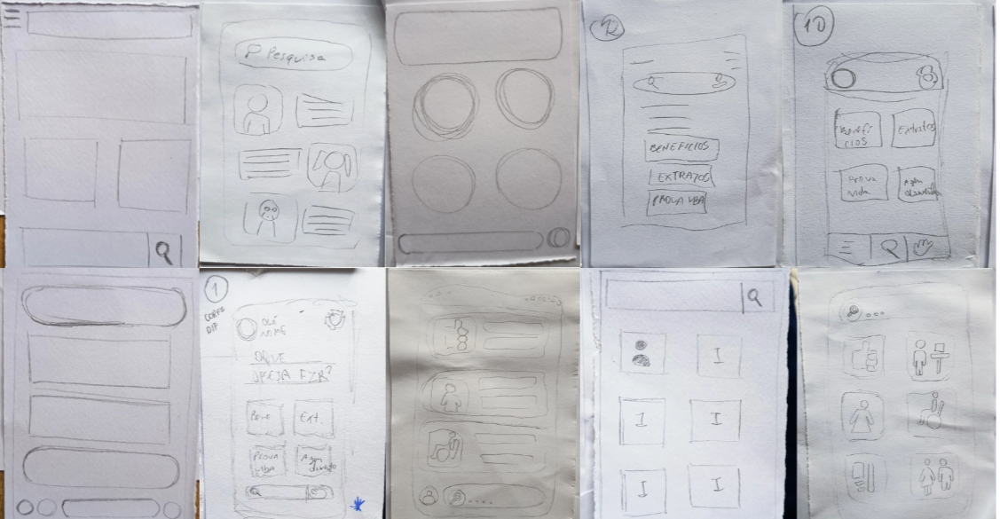
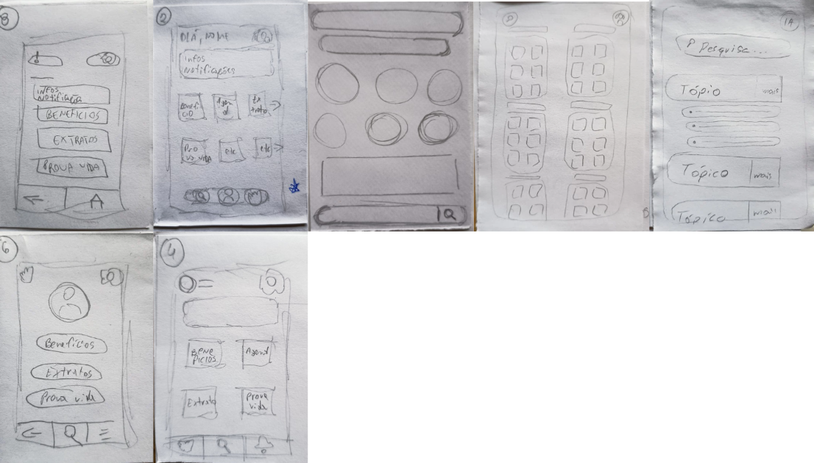
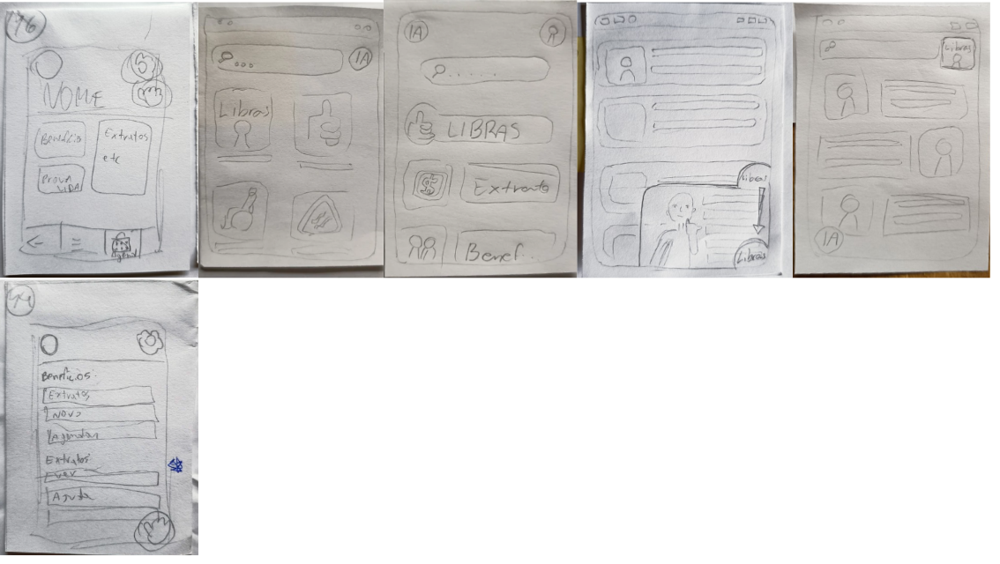
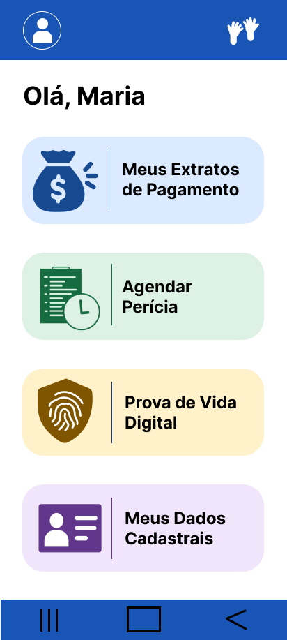
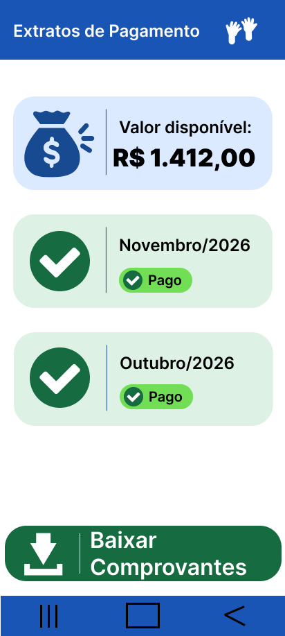
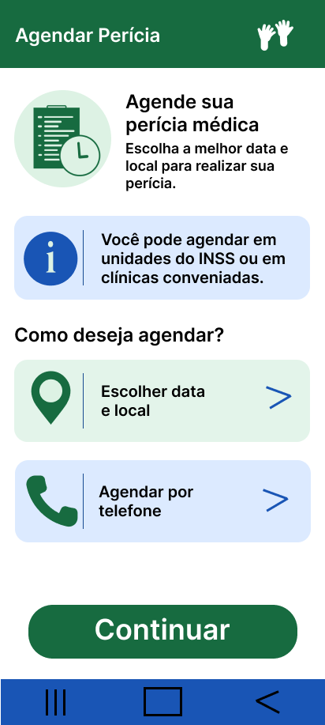
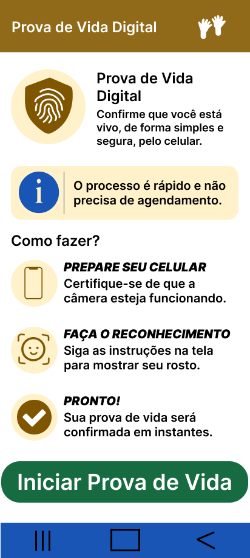
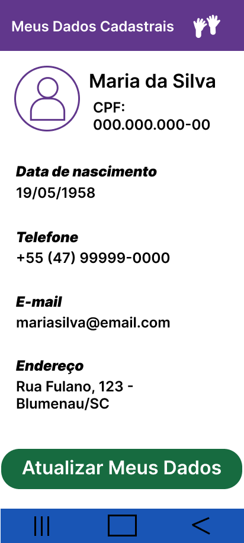

Maiores Barreiras
91,7%
travam ou desistem na etapa de reconhecimento facial.
Projeto desenvolvido pelo Grupo ABPT para tornar o acesso aos serviços previdenciários mais intuitivo, seguro e autônomo para o público idoso.
Universidade Regional de Blumenau (FURB)
Design
ABPT
Acessibilidade
Ana Caroline Wilmsen Alves, Bruno Filipe Schweigert, Pedro Nascimento Tierling e Thaís Nunes Miler
O problema identificado no briefing foi a dificuldade de navegação pelo aplicativo do governo “Meu INSS” apresentada, especialmente, por idosos, em grande parte por conta da sobrecarga visual da interface, que dificulta a leitura de textos e a interpretação dos ícones.
Em qual tela do app atual se tem mais dificuldade?
Quais ícones são mais difíceis de entender/identificar?
Ícones muito semelhantes entre si (mesma aparência/cor) dificultam o entendimento das opções?
Textos muito pequenos dificultam a leitura?
Frases muito grandes dificultam o entendimento?
Palavras diferentes dificultam a compreensão e o senso de se localizar dentro da interface atual?
Principais indicadores levantados junto ao público-alvo e familiares que auxiliam no uso do aplicativo.
travam ou desistem na etapa de reconhecimento facial.
já deixaram de usar o aplicativo por medo de apertar o botão errado e prejudicar o benefício.
dos familiares relatam alto esforço (níveis 4 e 5) para auxiliar os idosos nas tarefas.
abrem o aplicativo prioritariamente para consultar o extrato de pagamento.
apontam os nomes dos botões como difíceis de entender.
afirmam que o botão de LIBRAS atrapalha o toque em outros comandos.
dos idosos pedem ajuda mensalmente para usar o aplicativo.
Os respondentes destacaram a necessidade de reduzir o tempo de resposta do sistema e implementar tons mais escuros para aliviar a visão.
Cinco princípios fundamentais definidos a partir da pesquisa para orientar todas as decisões de interface.
A quantidade excessiva de opções e informações na tela inicial causa confusão nos usuários idosos, dificultando a navegação e gerando poluição visual. Por isso, o projeto deve apresentar de 4 a 6 cartões grandes e visuais, destacando os serviços essenciais, como extratos e agendamentos.
Termos burocráticos e textos longos dificultam a compreensão, principalmente para pessoas com baixa alfabetização ou dislexia. Para resolver esse problema, o aplicativo deve utilizar palavras simples, comuns no dia a dia, acompanhadas de ícones claros e fáceis de identificar.
O medo de clicar no botão errado e causar algum problema faz com que muitos usuários deixem de utilizar o aplicativo. Para transmitir mais segurança, o projeto deve incluir telas de confirmação simples, cores tranquilas e sinais visuais que indiquem quando uma ação foi realizada com sucesso.
Recursos como o botão de LIBRAS, quando mal posicionados, podem atrapalhar a navegação e dificultar o uso do aplicativo. Por isso, esses recursos, assim como os seletores de contraste, devem ficar em posições fixas e discretas no cabeçalho superior.
Muitos idosos dependem da ajuda de familiares para realizar tarefas simples no aplicativo, demonstrando a falta de autonomia da interface atual. Assim, o projeto deve oferecer caminhos diretos e intuitivos para consultas essenciais, como verificar se um pagamento foi realizado, permitindo que o usuário conclua essas tarefas sozinho em até três toques.
Síntese comparativa dos três conceitos elaborados pelo grupo e avaliados por meio da matriz ponderada.
| Conceito 1 | |
|---|---|
| Nome Curto | Simples |
| Frase conceito | Uma interface que seja intuitiva para o público |
| Diretrizes que Atende | Redução da carga cognitiva |
| Diretrizes que atende mal | Acessibilidade Funcional (Botão de Libras) |
| Representação | Matriz Ponderada |
| Conceito 2 | |
|---|---|
| Nome Curto | Chamativo |
| Frase conceito | Serviços que se destaquem para o nosso público-alvo |
| Diretrizes que Atende | Foco na autonomia (consultas principais) |
| Diretrizes que atende mal | Diminuição da carga cognitiva |
| Representação | Matriz Ponderada |
| Conceito 3 | |
|---|---|
| Nome Curto | Acessível |
| Frase conceito | Uma função que amplie o acesso à informação por meio da inclusão linguística |
| Diretrizes que Atende | Acessibilidade funcional (botão de LIBRAS) |
| Diretrizes que atende mal | Diminuição da carga cognitiva |
| Representação | Matriz Ponderada |
Estudos iniciais em papel explorando a organização da tela, hierarquia dos serviços principais e posicionamento dos recursos de acessibilidade.




Tela inicial

Extratos de pagamento

Agendar perícia

Prova de vida digital

Meus dados cadastrais
Navegue pela simulação do aplicativo Meu INSS redesenhado no celular, testando os fluxos de extrato de pagamento, agendamento de perícia, prova de vida digital e dados cadastrais.